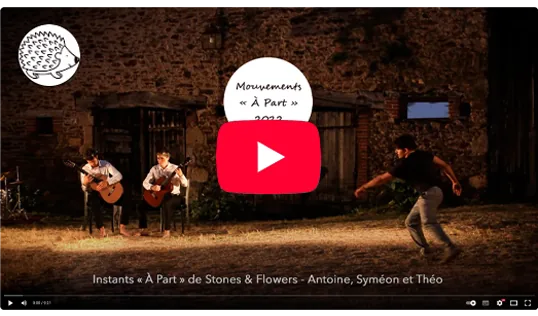

Lives & teasers
Captations live multi-cam, aftermovies, sessions et teasers percutants
pour concerts, spectacles, showcases et festivals.
Runway Les Fleurs Studio — PFW 2025
Plongée au cœur du défilé du défilé Les Fleurs Studio pendant la Paris Fashion Week 2025 : énergie du runway, préparations et précision des tenues. Tournage & montage par mes soins.
Teaser - Émergences artistiques - Effe & Ondes — été 2024
Captation du spectacle Émergences artistiques "Effe & Ondes" édition 2024 puis montage d'un teaser pour présenter le spectacle.
Showreel documentaire - Guindala Production - 2024
Showreel conçu pour la société de production de documentaires Guindala Production. J’ai assuré exclusivement le montage : sélection des extraits, construction narrative, rythme, transitions et titrage, en valorisant la diversité des sujets et l’identité de la marque.
Teaser - Spectacle Big Fish - 2023
Immersion au cœur de la compagnie Mü pendant la résidence d’été 2023 : répétitions, réglages techniques et préparation des scènes d’été. Captation, montage et légère optimisation image/son pour restituer l’énergie des coulisses. Réalisation, captation et montage par mes soins.
Retour en images - Senderos — « A gozar » - 2023
Capsule vidéo réalisée lors de la représentation de « A gozar » par Senderos au Théâtre des Feuillants (2023). Prise de vues en live, dérushage, montage et étalonnage afin de restituer l’énergie du spectacle.
Teaser spectacle de la BDG - 2022
Couverture du spectacle de fin d’année de l’association Breuillet Danse & Gymnastique : captation live, sélection des moments forts et création d’un teaser pensé pour le web et les réseaux.
Instants « À Part » N°1 - Stones & Flowers - 2022
Extrait de la première partie du spectacle Stones & Flowers lors de la résidence Mouvements « À Part » de 2022.
Instants « À Part » N°2 - Stones & Flowers - 2022
Extrait de la première partie du spectacle Stones & Flowers lors de la résidence Mouvements « À Part » de 2022.
Instants « À Part » N°3 - Stones & Flowers - 2022
Extrait de la première partie du spectacle Stones & Flowers lors de la résidence Mouvements « À Part » de 2022.

Instants « À Part » N°4 - Stones & Flowers - 2022
Extrait de la première partie du spectacle Stones & Flowers lors de la résidence Mouvements « À Part » de 2022.
Instants « À Part » N°5 - Stones & Flowers - 2022
Extrait de la première partie du spectacle Stones & Flowers lors de la résidence Mouvements « À Part » de 2022.
Retour en image - Stones & Flowers - Événements « À Part »
Capsule vidéo retraçant les temps forts du spectacle Stones & Flowers. Prises de vues en live, sélection des moments clés, montage rythmique et légère optimisation son/couleur pour restituer l’atmosphère du spectacle en format court.
Teaser - Mouvements « À Part » de 2021
Teaser pour le spectacle présenté lors de la résidence Mouvements « À Part » édition 2022.
Retour en images - Enyael - Événements « À Part » - 2019
Capsule vidéo retraçant les temps forts du spectacle Enyael. Prises de vues en live, sélection des moments clés, montage rythmique et légère optimisation son/couleur pour restituer l’atmosphère du spectacle en format court.